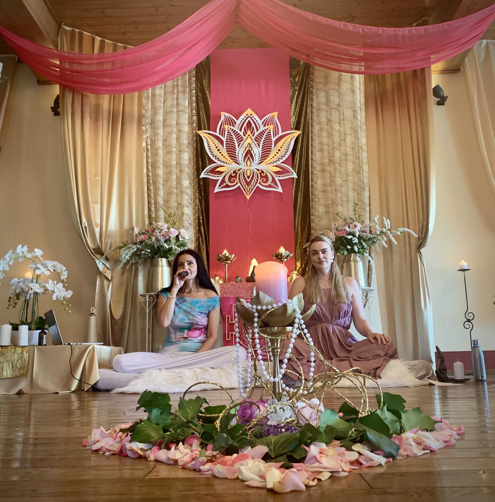
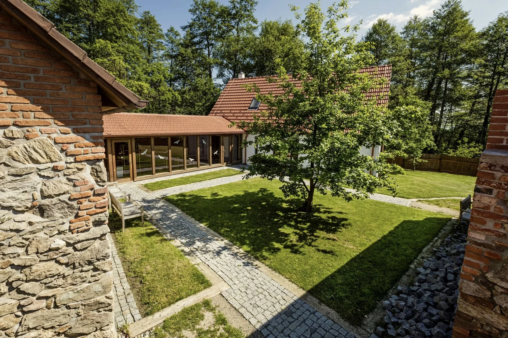
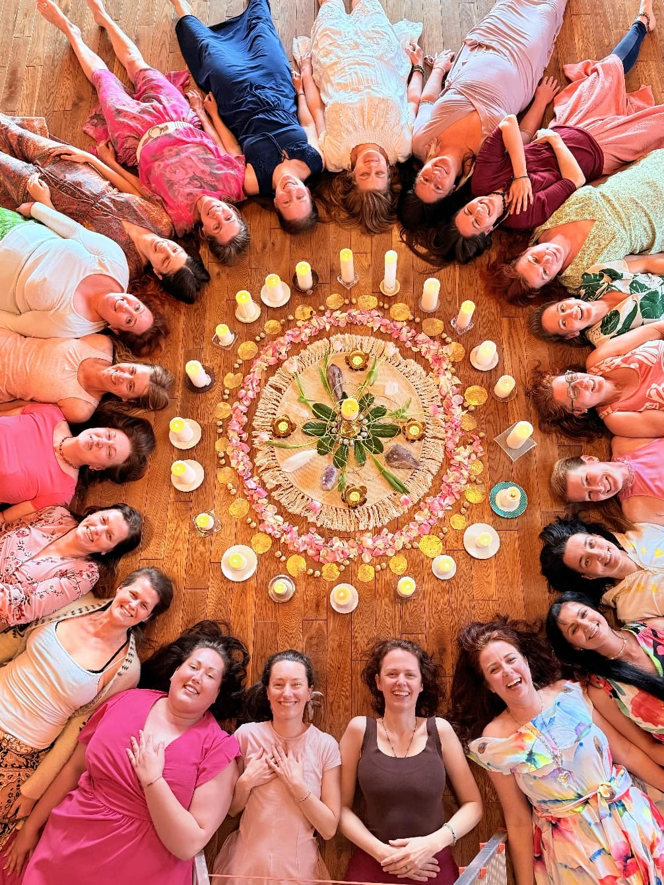
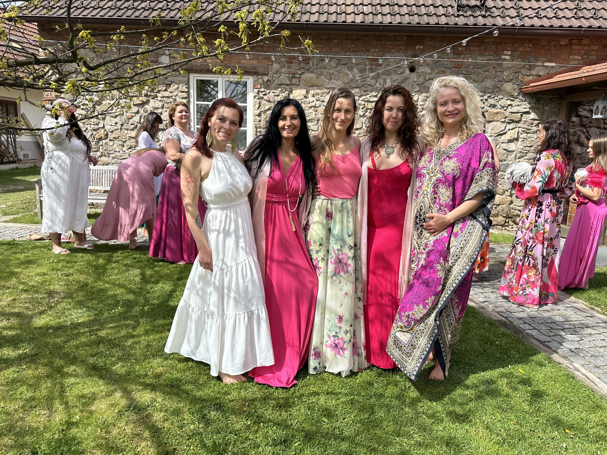
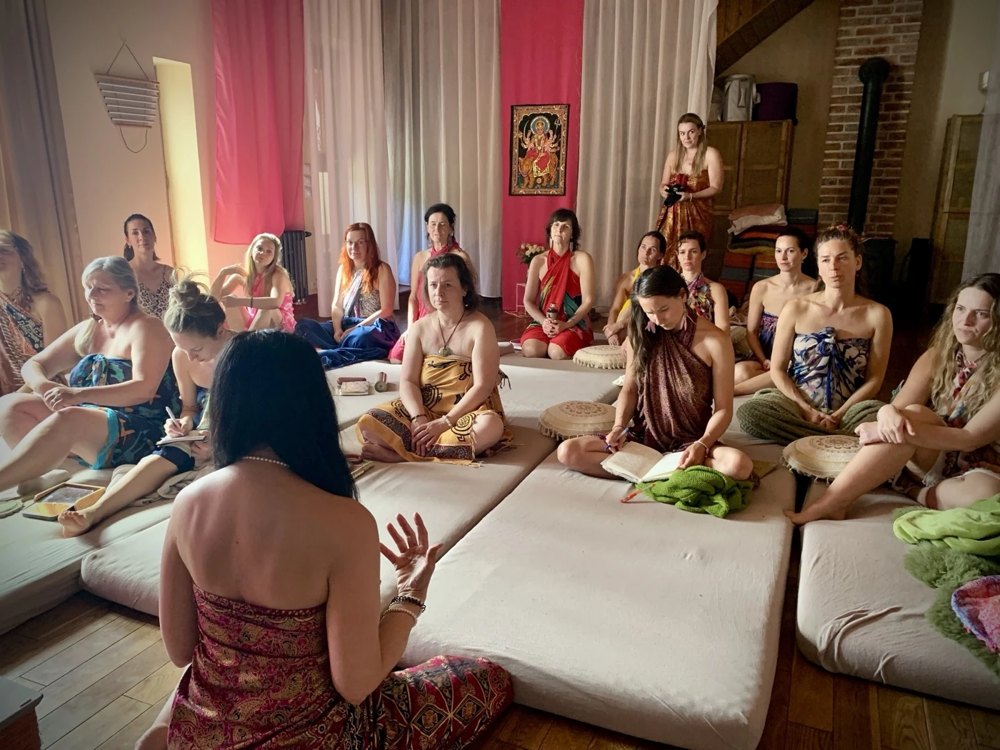
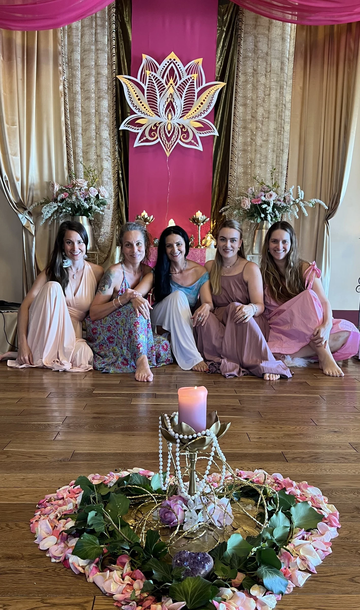
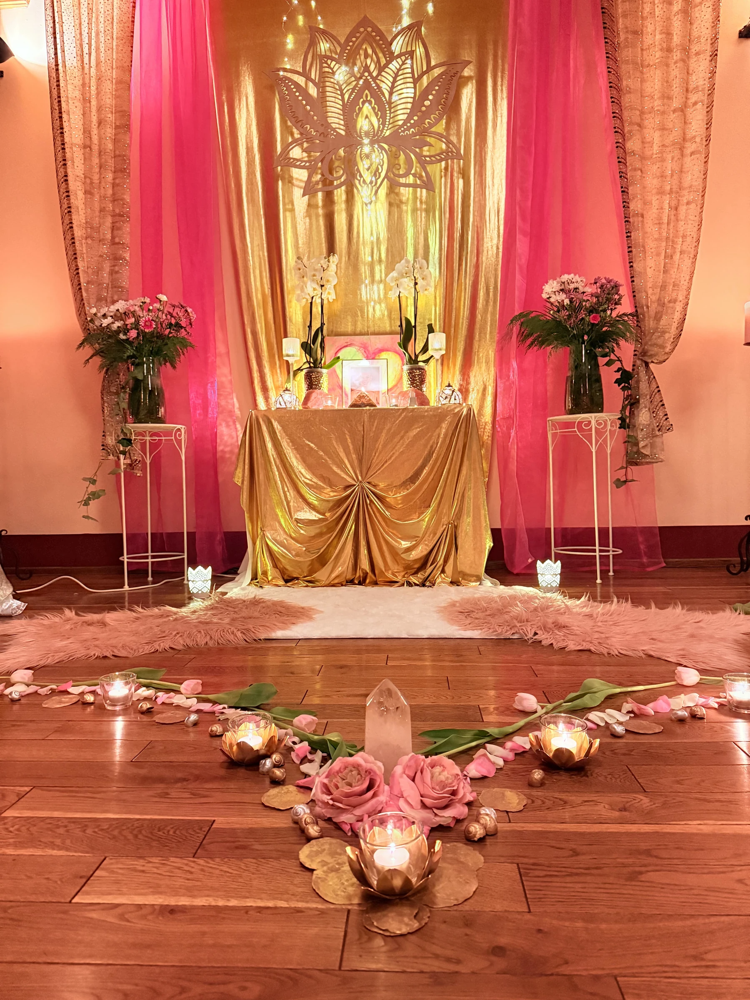

Návrat ženy k její přirozenosti
Brána srdce je prvotním portálem, ve kterém se otevírá skutečné ženství. V tomto modulu budeme rozvíjet schopnost vnímat svou krásu, jemnost a hlubší lásku k sobě samé.
Skrze vědomou práci s tělem, meditace, tantrické techniky a ženské rituály se začne postupně otevírat prostor pro hlubší propojení se svou ženskou podstatou.
Budeme uctívat a hýčkat své fyzické tělo, uvolňovat staré vrstvy nevědomí a znovu objevovat mnohdy ztracenou úctu ke svému tělu, cítění a ženské citlivosti.

Čeho se v tomto modulu dotkneme
otevření ušlechtilé krásy ženského těla a duše
návrat k ženské přirozenosti, citlivosti a vnitřní pravdě
probuzení principů Shakti skrze rituály a smyslný pohyb
hlubší spojení se srdcem, tělem a ženskou esencí
uvolnění starých vrstev ega a nevědomých vzorců
odpuštění, přijetí a odevzdání
aktivace životní síly Kundaliní
rozvíjení sebelásky, jemnosti a vnitřní otevřenosti
Tělo jako chrám ženského vědomí
Jemné vedení každého dne
Každý den této cesty tě bude jemně vést hlouběji do prožívání vlastního těla, citlivosti, přítomnosti a ženského vnímání.
Praxe vědomého těla
Skrze dech, pohyb, meditaci, tanec, tantrické techniky, sdílení i vědomou práci s tělem budeš postupně vstupovat do větší jemnosti, důvěry a hlubšího uvolnění do své přirozené ženské podstaty.
Posvátný ženský kruh
V bezpečném ženském kruhu vzniká prostor, ve kterém můžeš spočinout sama v sobě, uvolnit napětí a začít znovu vnímat krásu svého těla, emocí i vnitřního světa.

Centrum Buchov
Celý program probíhá uprostřed přírody, v malebném a energií naplněném prostředí centra Buchov. Prostor podporuje hluboké zklidnění, otevření ženského vnímání i propojení s přírodními rytmy.
Centrum se nachází v romantické středočeské krajině na dohled od bájné hory Blaník. Okolní louky, lesy a hluboký klid přírody přirozeně podporují ztišení a jemné otevření se samé sobě.
Chceš zjistit více o průběhu školy, praktických informacích i místě konání školy?
Nahlédni do prostoru prvního setkání





Krása je věčností, pozorující samu sebe v zrcadle.— Khalil Gibran
Ale Ty jsi tou věčností, i tím zrcadlem.
Pokud cítíš, že tě tato cesta volá, zvu tě vstoupit do prostoru prvního iniciačního modulu a otevřít novou kapitolu vztahu sama k sobě, ke svému tělu i ke své ženské podstatě.